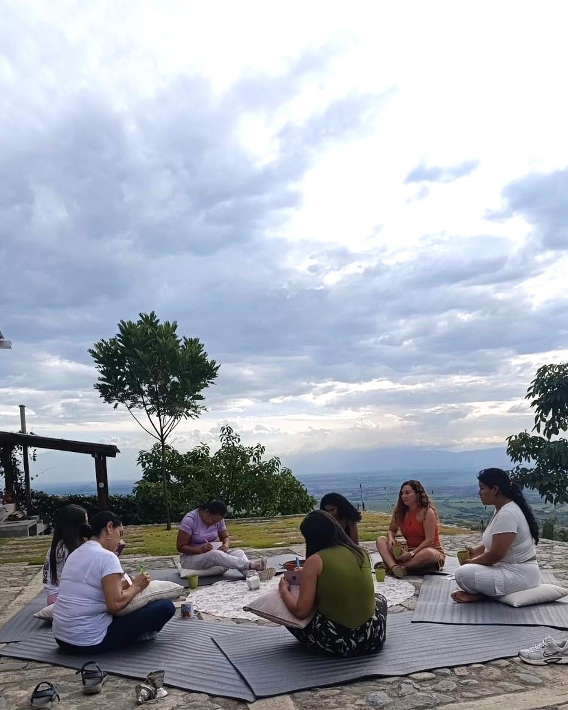
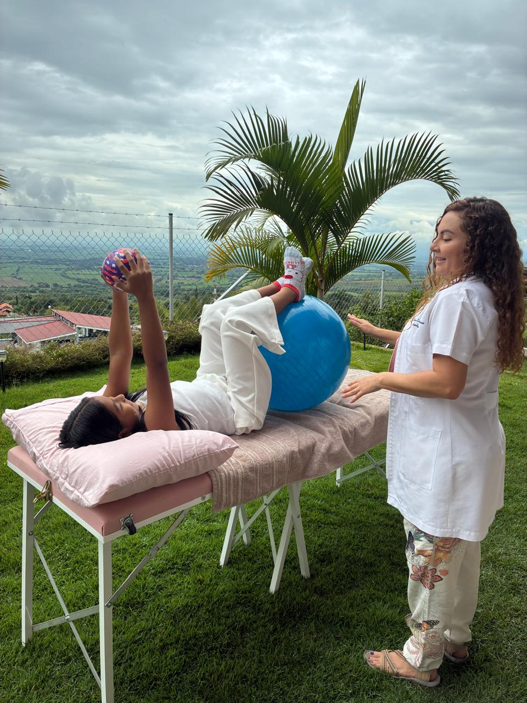
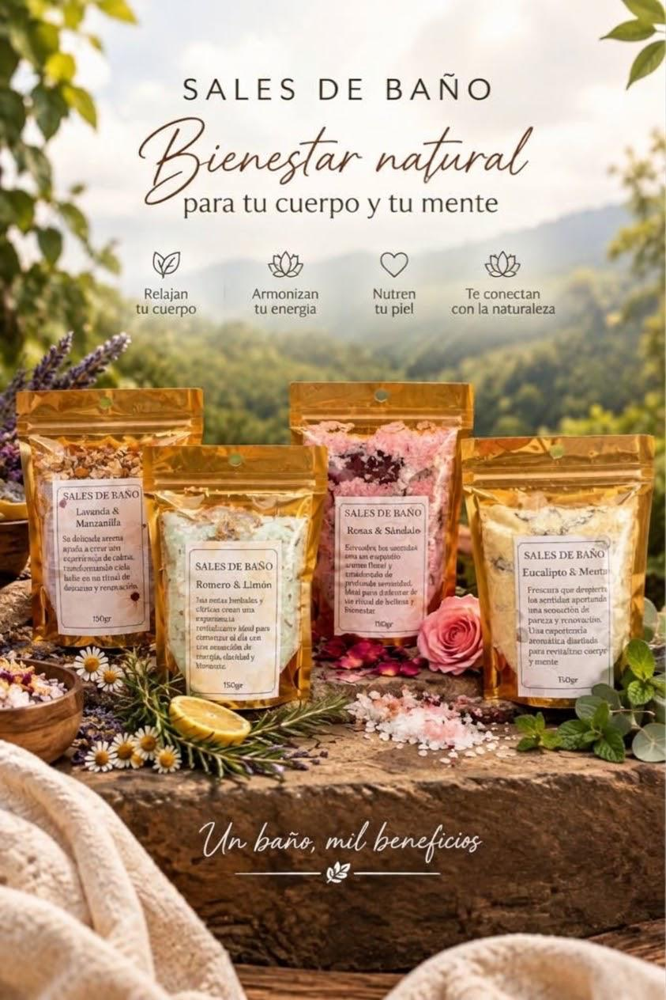

Regálate un tiempoQuiero regalarme un retiro
Jornadas de un día para mujeres: sendero guiado al río, siembra de semillas, yoga suave y nutrición viva de la huerta.
Un refugio de montaña para cuidar tu cuerpo, silenciar la mente y reconectar contigo.
📍 Corregimiento El Pomo, a 5 min de Hacienda El Paraíso

Regálate un tiempoJornadas de un día para mujeres: sendero guiado al río, siembra de semillas, yoga suave y nutrición viva de la huerta.

Recupera tu vitalidadFisioterapia clínica, descompresión postural y terapia manual individual en camilla al aire libre con vista al valle.

Bienestar en tu pielLínea artesanal Despertando Mi Poder: mantequillas y fórmulas con plantas cosechadas en la propia finca.
Conectando con las experiencias de Villa San Rafael...
Fechas programadas para grupos reducidos en El Pomo
Atención clínica personalizada guiada por Blanca Esther Perdomo
Despertando Mi Poder — Cuidado consciente para llevar a casa
Lo que sienten quienes nos visitan en la montaña
Todo lo que necesitas saber antes de subir a El Pomo
No. Todas las actividades están diseñadas desde la fisioterapia y el movimiento consciente accesible, guiadas paso a paso para adaptarse a tu condición física.
La vía está pavimentada en su totalidad hasta la zona y cuenta con tramos de placa huella en muy buen estado hasta Villa San Rafael. Es 100% transitable para cualquier automóvil particular.
Ropa cómoda para movimiento, zapatos deportivos con buen agarre para el sendero al río, gorra o sombrero, protector solar y una chaqueta liviana para el atardecer.
Contamos con quiosco campestre cubierto con vista panorámica protegida. La lluvia en la montaña suma serenidad y todas las actividades de relajación se disfrutan sin interrupción.
Corregimiento El Pomo, a tan solo 5 minutos de la histórica Hacienda El Paraíso
Déjanos tus datos para coordinar de forma personalizada.